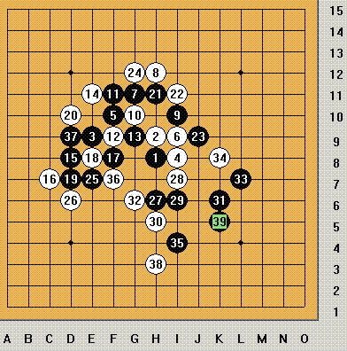
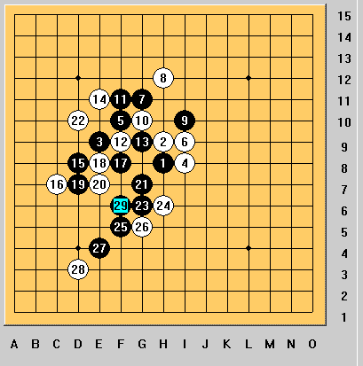
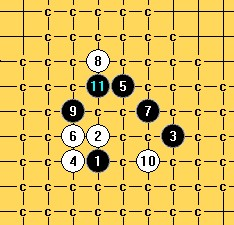

大残月一打 最新研究 最强下法 2个最强变化图
#1 大残月一打 最新研究 最强下法 2个最强变化图 作者：wrwak 发表时间：2008-10-26 2:28:58
 
我找不到防了 你们说那个点赢不了告诉我
#2 Re:大残月一打 最新研究 最强下法 2个最强变化图 作者：wrwak 发表时间：2008-10-26 2:37:18
感谢 空 和我下的一盘棋 激发灵感了，我发现 15 17 19这个变化 黑必胜#3 Re:大残月一打 最新研究 最强下法 2个最强变化图 作者：巴巴拉 发表时间：2008-10-26 10:59:22
两个图白怎么防都防不了,图一白38下J5好一点不?
#4 Re:大残月一打 最新研究 最强下法 2个最强变化图 作者：wrwak 发表时间：2008-10-26 14:34:17
第一幅图关键是27手 38防哪里都一样
#5 Re:大残月一打 最新研究 最强下法 2个最强变化图 作者：wrwak 发表时间：2008-10-26 19:26:06
还有一个20手 9D比较强
#6 Re:大残月一打 最新研究 最强下法 2个最强变化图 作者：笑雨辰 发表时间：2008-10-29 4:42:50
22下21下面呢#7 Re:大残月一打 最新研究 最强下法 2个最强变化图 作者：lijeki 发表时间：2008-10-30 13:22:11
弄个地毯防不就成了#8 Re:大残月一打 最新研究 最强下法 2个最强变化图 作者：wrwak 发表时间：2008-10-30 19:28:18
还下什么棋啊 都地毯一下 就可以了
#9 Re:Re:大残月一打 最新研究 最强下法 2个最强变化图 作者：笑雨辰 发表时间：2008-10-31 3:49:59
=======上图对应的爱五子棋谱代码如下，以便你拆解：========
h8h9e9i8f10i9g11h12i10g10f11f9g9e11d8c7f8e8d7e7g7d10g6h6f5g5e4d3f6h11i12h13h10h14h15f12g13b8c9d6
======================================================
这个呢
#10 Re:大残月一打 最新研究 最强下法 2个最强变化图 作者：袜子破个洞 发表时间：2008-11-1 17:35:45
10走17位置你看看能不能杀。
#11 Re:大残月一打 最新研究 最强下法 2个最强变化图 作者：袜子破个洞 发表时间：2008-11-2 13:11:01
=======上图对应的爱五子棋谱代码如下，以便你拆解：========
h8h9k9g8j10g9i11h12g10j8
======================================================能把这个杀掉。这个5就黑必胜了。
#12 Re:大残月一打 最新研究 最强下法 2个最强变化图 作者：袜子破个洞 发表时间：2008-11-2 13:31:15
我杀不掉。给个建议。看看。#13 Re:大残月一打 最新研究 最强下法 2个最强变化图 作者：潇洒 发表时间：2008-11-2 14:12:50
=======上图对应的爱五子棋谱代码如下，以便你拆解：========
h8h9k9g8i11g9j10h12g10j8j11i9f9h10g11h11h13k10g12g13i14f11i13i10j12j13h14
======================================================
#14 Re:大残月一打 最新研究 最强下法 2个最强变化图 作者：潇洒 发表时间：2008-11-2 14:14:08
=======上图对应的爱五子棋谱代码如下，以便你拆解：========
h8h9k9g8i11g9j10h12g10j8j11i9f9h10g11h11h13k10g12f7e6g13i14f11j14
======================================================
#15 Re:大残月一打 最新研究 最强下法 2个最强变化图 作者：袜子破个洞 发表时间：2008-11-2 14:18:41
你走的14都不强。14走在16位才强的。#16 Re:大残月一打 最新研究 最强下法 2个最强变化图 作者：袜子破个洞 发表时间：2008-11-2 14:20:00
=======上图对应的爱五子棋谱代码如下，以便你拆解：========
h8h9k9g8j10g9i11h12g10j8j11i9f9h11h10k10l11j12m9l12
======================================================这一路你看看。14按我这个图走。下面15可以随便选择。或者你想换11手也可以。
#17 Re:大残月一打 最新研究 最强下法 2个最强变化图 作者：潇洒 发表时间：2008-11-2 14:26:46
=======上图对应的爱五子棋谱代码如下，以便你拆解：========
h8h9k9g8i11g9j10h12g10j8j11i9f9h11h10i10k10
======================================================
#18 Re:大残月一打 最新研究 最强下法 2个最强变化图 作者：袜子破个洞 发表时间：2008-11-2 14:29:33
16防最右边。。唯一了。#19 Re:大残月一打 最新研究 最强下法 2个最强变化图 作者：潇洒 发表时间：2008-11-2 14:32:55
=======上图对应的爱五子棋谱代码如下，以便你拆解：========
h8h9k9g8i11g9j10h12g10j8j11i9f9h11h10k10f7i10g6g12f13i6i8h5j7j12f12f10f5h7f6f8d6
======================================================
#20 Re:大残月一打 最新研究 最强下法 2个最强变化图 作者：潇洒 发表时间：2008-11-2 14:36:33
9楼换个23就杀了
=======上图对应的爱五子棋谱代码如下，以便你拆解：========
h8h9e9i8f10i9g11h12i10g10f11f9g9e11d8c7f8e8d7e7g7d10d6d5i7j6h6i5g5j7k6j8g6g8e6
======================================================
#21 Re:大残月一打 最新研究 最强下法 2个最强变化图 作者：潇洒 发表时间：2008-11-2 14:42:19
=======上图对应的爱五子棋谱代码如下，以便你拆解：========
h8h9k9g8i11g9j10h12g10j8j11i9f9h11h10k10f7i10g6g12f13i6i8h5j7f5e8
======================================================
#22 Re:大残月一打 最新研究 最强下法 2个最强变化图 作者：袜子破个洞 发表时间：2008-11-2 14:49:19
24楼20换27位。或者18走13下面。这样的局面白一攻一般黑就有机会。白老实的防黑很难杀出来。还有更多强防。无奈。#23 Re:大残月一打 最新研究 最强下法 2个最强变化图 作者：刀魂 发表时间：2008-11-2 15:30:31
大残月，关键看黑的 2打，对了就胜 否者，，，，，
#24 Re:大残月一打 最新研究 最强下法 2个最强变化图 作者：wrwak 发表时间：2008-11-3 22:34:27
为什么我发帖从来就没有加过分
［ 失落刀 于 2008-11-6 0:13:10 时奖励此帖[金币加 20 威望加1］
#25 Re:大残月一打 最新研究 最强下法 2个最强变化图 作者：雨一直下 发表时间：2008-11-5 18:23:17
花花让偶研究一下这个,把偶从飞车和地主中拉过来,,,看了下相关贴子,原来说这个10手,经过拆解,发现这个10也必胜了!!耶,又可以去飞车了哇.....

这个11就必胜了...
［ 失落刀 于 2008-11-5 18:29:42 时奖励此帖[金币加 20 威望加1］
#26 Re:大残月一打 最新研究 最强下法 2个最强变化图 作者：失落刀 发表时间：2008-11-5 18:38:38
楼上的强人，据江湖传闻好像是明教第二届名人杯慢棋赛黑木崖组第一。名人称号获得者吧？#27 Re:大残月一打 最新研究 最强下法 2个最强变化图 作者：袜子破个洞 发表时间：2008-11-5 22:39:08
=======上图对应的爱五子棋谱代码如下，以便你拆解：========
h8h9k9g8j10g9i11h12g10j8h11i10j11k11
======================================================这个怎么杀.
#28 Re:大残月一打 最新研究 最强下法 2个最强变化图 作者：失落刀 发表时间：2008-11-5 22:42:45
你回答我的大残月问题，我给你这个地毯。楼上的。#29 Re:大残月一打 最新研究 最强下法 2个最强变化图 作者：袜子破个洞 发表时间：2008-11-5 22:50:03
QQ多少.加下.#30 Re:大残月一打 最新研究 最强下法 2个最强变化图 作者：雨一直下 发表时间：2008-11-6 8:58:36
呵呵,失落刀过奖了。。这次明教妖刀慢棋赛，对局MS未完全结束，结果还在统计中，所以尘埃尚未落定，黑木崖第一的称号言之过早
另外，即使偶取得较好成绩，也不代表什么。此次慢棋赛有许多原因大家未发挥最佳水准，首先好多人没有参赛；其次有些人参赛了，但因慢棋时间挺长，没能坚持比完；最后可能还有诸多未知原因，不能一一列出。相信下次比赛大家能发挥更佳水准，偶也就没有那么幸运了。
至于袜子破洞朋友的问题，到这个14的确是最强防，须有妙手解决，而后面不同的应对也有不同杀法。还是遵从失落刀版主的意见，把题目解出来再给答案吧，嘻